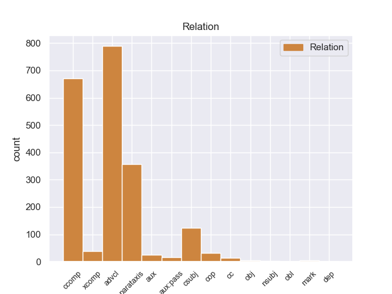
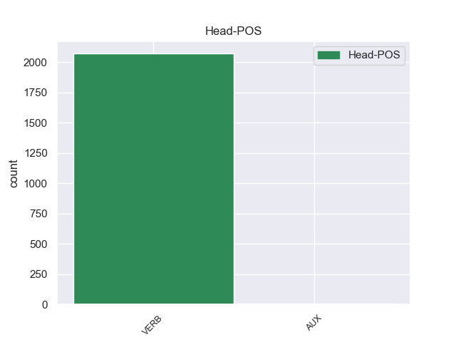
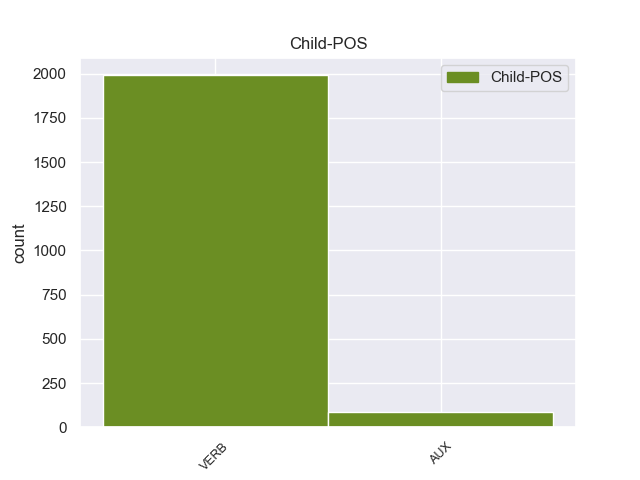

Distribution of features within this leaf



Agreement Rules sorted by frequency.
- When the dependent token is the adverbial clause modifier(advcl) of the head token,
1 Es ser VERB _ Mood=Ind|Number=Sing|Person=3|Tense=Pres|VerbForm=Fin 0 _ _ _
2 así _ _ _ _ 0 _ _ _
3 como _ _ _ _ 0 _ _ _
4 descubrió descubrir VERB _ Mood=Ind|Number=Sing|Person=3|Tense=Past|VerbForm=Fin 1 advcl _ _
5 sus _ _ _ _ 0 _ _ _
6 dotes _ _ _ _ 0 _ _ _
7 para _ _ _ _ 0 _ _ _
8 la _ _ _ _ 0 _ _ _
9 pintura _ _ _ _ 0 _ _ _
10 comenzando _ _ _ _ 0 _ _ _
11 a _ _ _ _ 0 _ _ _
12 plasmar _ _ _ _ 0 _ _ _
13 sus _ _ _ _ 0 _ _ _
14 obras _ _ _ _ 0 _ _ _
15 en _ _ _ _ 0 _ _ _
16 óleo _ _ _ _ 0 _ _ _
17 sobre _ _ _ _ 0 _ _ _
18 lienzo _ _ _ _ 0 _ _ _
19 . _ _ _ _ 0 _ _ _
1 El _ _ _ _ 0 _ _ _
2 estudio _ _ _ _ 0 _ _ _
3 , _ _ _ _ 0 _ _ _
4 publicado _ _ _ _ 0 _ _ _
5 en _ _ _ _ 0 _ _ _
6 la _ _ _ _ 0 _ _ _
7 revista _ _ _ _ 0 _ _ _
8 Environmental _ _ _ _ 0 _ _ _
9 Health _ _ _ _ 0 _ _ _
10 Perspectives _ _ _ _ 0 _ _ _
11 , _ _ _ _ 0 _ _ _
12 precisó precisar VERB _ Mood=Ind|Number=Sing|Person=3|Tense=Past|VerbForm=Fin 0 _ _ _
13 que _ _ _ _ 0 _ _ _
14 el _ _ _ _ 0 _ _ _
15 herbicida _ _ _ _ 0 _ _ _
16 mata matar VERB _ Mood=Ind|Number=Sing|Person=3|Tense=Pres|VerbForm=Fin 12 ccomp _ _
17 una _ _ _ _ 0 _ _ _
18 gran _ _ _ _ 0 _ _ _
19 proporción _ _ _ _ 0 _ _ _
20 de _ _ _ _ 0 _ _ _
21 esas _ _ _ _ 0 _ _ _
22 células _ _ _ _ 0 _ _ _
23 después _ _ _ _ 0 _ _ _
24 de _ _ _ _ 0 _ _ _
25 sólo _ _ _ _ 0 _ _ _
26 dieciocho _ _ _ _ 0 _ _ _
27 horas _ _ _ _ 0 _ _ _
28 de _ _ _ _ 0 _ _ _
29 exposición _ _ _ _ 0 _ _ _
30 a _ _ _ _ 0 _ _ _
31 concentraciones _ _ _ _ 0 _ _ _
32 menores _ _ _ _ 0 _ _ _
33 que _ _ _ _ 0 _ _ _
34 las _ _ _ _ 0 _ _ _
35 utilizadas _ _ _ _ 0 _ _ _
36 en _ _ _ _ 0 _ _ _
37 el _ _ _ _ 0 _ _ _
38 uso _ _ _ _ 0 _ _ _
39 agrícola _ _ _ _ 0 _ _ _
40 . _ _ _ _ 0 _ _ _
1 En _ _ _ _ 0 _ _ _
2 este _ _ _ _ 0 _ _ _
3 momento _ _ _ _ 0 _ _ _
4 , _ _ _ _ 0 _ _ _
5 expuso exponer VERB _ Mood=Ind|Number=Sing|Person=3|Tense=Past|VerbForm=Fin 7 parataxis _ SpaceAfter=No
6 , _ _ _ _ 0 _ _ _
7 están estar VERB _ Mood=Ind|Number=Plur|Person=3|Tense=Pres|VerbForm=Fin 0 _ _ _
8 en _ _ _ _ 0 _ _ _
9 duda _ _ _ _ 0 _ _ _
10 las _ _ _ _ 0 _ _ _
11 ideas _ _ _ _ 0 _ _ _
12 conservadoras _ _ _ _ 0 _ _ _
13 que _ _ _ _ 0 _ _ _
14 se _ _ _ _ 0 _ _ _
15 han _ _ _ _ 0 _ _ _
16 aplicado _ _ _ _ 0 _ _ _
17 en _ _ _ _ 0 _ _ _
18 México _ _ _ _ 0 _ _ _
19 , _ _ _ _ 0 _ _ _
20 debido _ _ _ _ 0 _ _ _
21 a _ _ _ _ 0 _ _ _
22 los _ _ _ _ 0 _ _ _
23 resultados _ _ _ _ 0 _ _ _
24 económicos _ _ _ _ 0 _ _ _
25 y _ _ _ _ 0 _ _ _
26 los _ _ _ _ 0 _ _ _
27 abusos _ _ _ _ 0 _ _ _
28 de _ _ _ _ 0 _ _ _
29 intermediarios _ _ _ _ 0 _ _ _
30 financieros _ _ _ _ 0 _ _ _
31 . _ _ _ _ 0 _ _ _
1 Si _ _ _ _ 0 _ _ _
2 uno _ _ _ _ 0 _ _ _
3 contesta _ _ _ _ 0 _ _ _
4 que _ _ _ _ 0 _ _ _
5 los _ _ _ _ 0 _ _ _
6 datos _ _ _ _ 0 _ _ _
7 y _ _ _ _ 0 _ _ _
8 la _ _ _ _ 0 _ _ _
9 experiencia _ _ _ _ 0 _ _ _
10 contradicen _ _ _ _ 0 _ _ _
11 su _ _ _ _ 0 _ _ _
12 opinión _ _ _ _ 0 _ _ _
13 , _ _ _ _ 0 _ _ _
14 le _ _ _ _ 0 _ _ _
15 llaman _ _ _ _ 0 _ _ _
16 políticamente _ _ _ _ 0 _ _ _
17 correcto _ _ _ _ 0 _ _ _
18 ( _ _ _ _ 0 _ _ _
19 y _ _ _ _ 0 _ _ _
20 , _ _ _ _ 0 _ _ _
21 por _ _ _ _ 0 _ _ _
22 supuesto _ _ _ _ 0 _ _ _
23 , _ _ _ _ 0 _ _ _
24 los _ _ _ _ 0 _ _ _
25 datos _ _ _ _ 0 _ _ _
26 y _ _ _ _ 0 _ _ _
27 la _ _ _ _ 0 _ _ _
28 experiencia _ _ _ _ 0 _ _ _
29 son _ _ _ _ 0 _ _ _
30 falsos _ _ _ _ 0 _ _ _
31 y _ _ _ _ 0 _ _ _
32 están _ _ _ _ 0 _ _ _
33 manipulados _ _ _ _ 0 _ _ _
34 por _ _ _ _ 0 _ _ _
35 los _ _ _ _ 0 _ _ _
36 progres _ _ _ _ 0 _ _ _
37 , _ _ _ _ 0 _ _ _
38 que _ _ _ _ 0 _ _ _
39 es ser VERB _ Mood=Ind|Number=Sing|Person=3|Tense=Pres|VerbForm=Fin 0 _ _ _
40 como _ _ _ _ 0 _ _ _
41 llaman llamar VERB _ Mood=Ind|Number=Plur|Person=3|Tense=Pres|VerbForm=Fin 39 csubj _ _
42 aquí _ _ _ _ 0 _ _ _
43 a _ _ _ _ 0 _ _ _
44 lo _ _ _ _ 0 _ _ _
45 que _ _ _ _ 0 _ _ _
46 en _ _ _ _ 0 _ _ _
47 EEUU _ _ _ _ 0 _ _ _
48 dicen _ _ _ _ 0 _ _ _
49 liberals _ _ _ _ 0 _ _ _
50 ) _ _ _ _ 0 _ _ _
51 . _ _ _ _ 0 _ _ _
1 En _ _ _ _ 0 _ _ _
2 997 _ _ _ _ 0 _ _ _
3 murió _ _ _ _ 0 _ _ _
4 el _ _ _ _ 0 _ _ _
5 emir _ _ _ _ 0 _ _ _
6 buyida _ _ _ _ 0 _ _ _
7 Fajar _ _ _ _ 0 _ _ _
8 ad _ _ _ _ 0 _ _ _
9 - _ _ _ _ 0 _ _ _
10 Dawla _ _ _ _ 0 _ _ _
11 Ali _ _ _ _ 0 _ _ _
12 , _ _ _ _ 0 _ _ _
13 lo _ _ _ _ 0 _ _ _
14 que _ _ _ _ 0 _ _ _
15 permitió permitir VERB _ Mood=Ind|Number=Sing|Person=3|Tense=Past|VerbForm=Fin 0 _ _ _
16 a _ _ _ _ 0 _ _ _
17 Baha _ _ _ _ 0 _ _ _
18 ad _ _ _ _ 0 _ _ _
19 - _ _ _ _ 0 _ _ _
20 Dawla _ _ _ _ 0 _ _ _
21 Firuz _ _ _ _ 0 _ _ _
22 reforzar reforzar VERB _ Mood=Ind|Number=Sing|Person=3|Tense=Pres|VerbForm=Fin 15 xcomp _ _
23 su _ _ _ _ 0 _ _ _
24 posición _ _ _ _ 0 _ _ _
25 en _ _ _ _ 0 _ _ _
26 Fars _ _ _ _ 0 _ _ _
27 . _ _ _ _ 0 _ _ _
1 Es ser AUX _ Mood=Ind|Number=Sing|Person=3|Tense=Pres|VerbForm=Fin 2 cop _ _
2 preciso precerer VERB _ Mood=Ind|Number=Sing|Person=3|Tense=Past|VerbForm=Fin 0 _ _ _
3 que _ _ _ _ 0 _ _ _
4 todas _ _ _ _ 0 _ _ _
5 las _ _ _ _ 0 _ _ _
6 actividades _ _ _ _ 0 _ _ _
7 de _ _ _ _ 0 _ _ _
8 el _ _ _ _ 0 _ _ _
9 conjunto _ _ _ _ 0 _ _ _
10 de _ _ _ _ 0 _ _ _
11 la _ _ _ _ 0 _ _ _
12 Unión _ _ _ _ 0 _ _ _
13 se _ _ _ _ 0 _ _ _
14 vuelvan _ _ _ _ 0 _ _ _
15 a _ _ _ _ 0 _ _ _
16 concentrar _ _ _ _ 0 _ _ _
17 en _ _ _ _ 0 _ _ _
18 los _ _ _ _ 0 _ _ _
19 ámbitos _ _ _ _ 0 _ _ _
20 de _ _ _ _ 0 _ _ _
21 las _ _ _ _ 0 _ _ _
22 políticas _ _ _ _ 0 _ _ _
23 esenciales _ _ _ _ 0 _ _ _
24 . _ _ _ _ 0 _ _ _
1 El _ _ _ _ 0 _ _ _
2 Doctor _ _ _ _ 0 _ _ _
3 Boskonovitch _ _ _ _ 0 _ _ _
4 y _ _ _ _ 0 _ _ _
5 Yoshimitsu _ _ _ _ 0 _ _ _
6 están estar VERB _ Mood=Ind|Number=Plur|Person=3|Tense=Pres|VerbForm=Fin 0 _ _ _
7 en _ _ _ _ 0 _ _ _
8 los _ _ _ _ 0 _ _ _
9 laboratorios _ _ _ _ 0 _ _ _
10 de _ _ _ _ 0 _ _ _
11 el _ _ _ _ 0 _ _ _
12 primero _ _ _ _ 0 _ _ _
13 , _ _ _ _ 0 _ _ _
14 observan _ _ _ _ 0 _ _ _
15 a _ _ _ _ 0 _ _ _
16 un _ _ _ _ 0 _ _ _
17 ratón _ _ _ _ 0 _ _ _
18 que _ _ _ _ 0 _ _ _
19 está _ _ _ _ 0 _ _ _
20 bebiendo _ _ _ _ 0 _ _ _
21 la _ _ _ _ 0 _ _ _
22 sangre _ _ _ _ 0 _ _ _
23 de _ _ _ _ 0 _ _ _
24 Ogre _ _ _ _ 0 _ _ _
25 , _ _ _ _ 0 _ _ _
26 de _ _ _ _ 0 _ _ _
27 repente _ _ _ _ 0 _ _ _
28 los _ _ _ _ 0 _ _ _
29 dos _ _ _ _ 0 _ _ _
30 salen salir AUX _ Mood=Ind|Number=Plur|Person=3|Tense=Pres|VerbForm=Fin 6 aux _ _
31 corriendo _ _ _ _ 0 _ _ _
32 , _ _ _ _ 0 _ _ _
33 cuando _ _ _ _ 0 _ _ _
34 el _ _ _ _ 0 _ _ _
35 ratón _ _ _ _ 0 _ _ _
36 se _ _ _ _ 0 _ _ _
37 vuelve _ _ _ _ 0 _ _ _
38 gigante _ _ _ _ 0 _ _ _
39 y _ _ _ _ 0 _ _ _
40 destruye _ _ _ _ 0 _ _ _
41 el _ _ _ _ 0 _ _ _
42 laboratorio _ _ _ _ 0 _ _ _
43 . _ _ _ _ 0 _ _ _
1 Por _ _ _ _ 0 _ _ _
2 consiguiente _ _ _ _ 0 _ _ _
3 , _ _ _ _ 0 _ _ _
4 Comisión _ _ _ _ 0 _ _ _
5 fuerte _ _ _ _ 0 _ _ _
6 , _ _ _ _ 0 _ _ _
7 pero _ _ _ _ 0 _ _ _
8 que _ _ _ _ 0 _ _ _
9 se _ _ _ _ 0 _ _ _
10 apoye _ _ _ _ 0 _ _ _
11 en _ _ _ _ 0 _ _ _
12 un _ _ _ _ 0 _ _ _
13 Parlamento _ _ _ _ 0 _ _ _
14 , _ _ _ _ 0 _ _ _
15 y _ _ _ _ 0 _ _ _
16 el _ _ _ _ 0 _ _ _
17 Parlamento _ _ _ _ 0 _ _ _
18 es _ _ _ _ 0 _ _ _
19 por _ _ _ _ 0 _ _ _
20 tanto _ _ _ _ 0 _ _ _
21 su _ _ _ _ 0 _ _ _
22 aliado _ _ _ _ 0 _ _ _
23 , _ _ _ _ 0 _ _ _
24 pero _ _ _ _ 0 _ _ _
25 un _ _ _ _ 0 _ _ _
26 aliado _ _ _ _ 0 _ _ _
27 poco _ _ _ _ 0 _ _ _
28 cómodo _ _ _ _ 0 _ _ _
29 , _ _ _ _ 0 _ _ _
30 de _ _ _ _ 0 _ _ _
31 el _ _ _ _ 0 _ _ _
32 que _ _ _ _ 0 _ _ _
33 es ser AUX _ Mood=Ind|Number=Sing|Person=3|Tense=Pres|VerbForm=Fin 34 aux:pass _ _
34 preciso preciso VERB _ Mood=Ind|Number=Sing|Person=3|Tense=Past|VerbForm=Fin 0 _ _ _
35 oír _ _ _ _ 0 _ _ _
36 los _ _ _ _ 0 _ _ _
37 mensajes _ _ _ _ 0 _ _ _
38 , _ _ _ _ 0 _ _ _
39 y _ _ _ _ 0 _ _ _
40 yo _ _ _ _ 0 _ _ _
41 quisiera _ _ _ _ 0 _ _ _
42 dar _ _ _ _ 0 _ _ _
43 uno _ _ _ _ 0 _ _ _
44 o _ _ _ _ 0 _ _ _
45 dos _ _ _ _ 0 _ _ _
46 en _ _ _ _ 0 _ _ _
47 esta _ _ _ _ 0 _ _ _
48 breve _ _ _ _ 0 _ _ _
49 intervención _ _ _ _ 0 _ _ _
50 . _ _ _ _ 0 _ _ _
1 Aparte _ _ _ _ 0 _ _ _
2 de _ _ _ _ 0 _ _ _
3 lo _ _ _ _ 0 _ _ _
4 anterior _ _ _ _ 0 _ _ _
5 , _ _ _ _ 0 _ _ _
6 era _ _ _ _ 0 _ _ _
7 muy _ _ _ _ 0 _ _ _
8 frecuente _ _ _ _ 0 _ _ _
9 la _ _ _ _ 0 _ _ _
10 aparición _ _ _ _ 0 _ _ _
11 de _ _ _ _ 0 _ _ _
12 cobre _ _ _ _ 0 _ _ _
13 nativo _ _ _ _ 0 _ _ _
14 , _ _ _ _ 0 _ _ _
15 es ser VERB _ Mood=Ind|Number=Sing|Person=3|Tense=Pres|VerbForm=Fin 20 cc _ _
16 decir _ _ _ _ 0 _ _ _
17 , _ _ _ _ 0 _ _ _
18 que _ _ _ _ 0 _ _ _
19 se _ _ _ _ 0 _ _ _
20 encuentra encontrar VERB _ Mood=Ind|Number=Sing|Person=3|Tense=Pres|VerbForm=Fin 0 _ _ _
21 en _ _ _ _ 0 _ _ _
22 estado _ _ _ _ 0 _ _ _
23 metálico _ _ _ _ 0 _ _ _
24 natural _ _ _ _ 0 _ _ _
25 ; _ _ _ _ 0 _ _ _
1 Piensen Pienr VERB _ Mood=Ind|Number=Plur|Person=3|Tense=Pres|VerbForm=Fin 0 _ _ _
2 en _ _ _ _ 0 _ _ _
3 cuánta _ _ _ _ 0 _ _ _
4 gente _ _ _ _ 0 _ _ _
5 trabaja trabajar VERB _ Mood=Ind|Number=Sing|Person=3|Tense=Pres|VerbForm=Fin 1 obj _ _
6 en _ _ _ _ 0 _ _ _
7 grandes _ _ _ _ 0 _ _ _
8 empresas _ _ _ _ 0 _ _ _
9 , _ _ _ _ 0 _ _ _
10 sin _ _ _ _ 0 _ _ _
11 utilizar _ _ _ _ 0 _ _ _
12 sus _ _ _ _ 0 _ _ _
13 aptitudes _ _ _ _ 0 _ _ _
14 , _ _ _ _ 0 _ _ _
15 atrapados _ _ _ _ 0 _ _ _
16 en _ _ _ _ 0 _ _ _
17 grandes _ _ _ _ 0 _ _ _
18 organizaciones _ _ _ _ 0 _ _ _
19 , _ _ _ _ 0 _ _ _
20 preocupados _ _ _ _ 0 _ _ _
21 por _ _ _ _ 0 _ _ _
22 un _ _ _ _ 0 _ _ _
23 posible _ _ _ _ 0 _ _ _
24 traslado _ _ _ _ 0 _ _ _
25 porque _ _ _ _ 0 _ _ _
26 no _ _ _ _ 0 _ _ _
27 pueden _ _ _ _ 0 _ _ _
28 llevar _ _ _ _ 0 _ _ _
29 se _ _ _ _ 0 _ _ _
30 las _ _ _ _ 0 _ _ _
31 pensiones _ _ _ _ 0 _ _ _
32 consigo _ _ _ _ 0 _ _ _
33 , _ _ _ _ 0 _ _ _
34 no _ _ _ _ 0 _ _ _
35 menos _ _ _ _ 0 _ _ _
36 preocupados _ _ _ _ 0 _ _ _
37 por _ _ _ _ 0 _ _ _
38 el _ _ _ _ 0 _ _ _
39 paro _ _ _ _ 0 _ _ _
40 . _ _ _ _ 0 _ _ _
1 La _ _ _ _ 0 _ _ _
2 FAI _ _ _ _ 0 _ _ _
3 inicialmente _ _ _ _ 0 _ _ _
4 no _ _ _ _ 0 _ _ _
5 reconoció reconocer VERB _ Mood=Ind|Number=Sing|Person=3|Tense=Past|VerbForm=Fin 0 _ _ _
6 el _ _ _ _ 0 _ _ _
7 logro _ _ _ _ 0 _ _ _
8 porque _ _ _ _ 0 _ _ _
9 no _ _ _ _ 0 _ _ _
10 fue ser VERB _ Mood=Ind|Number=Sing|Person=3|Tense=Past|VerbForm=Fin 5 mark _ _
11 en _ _ _ _ 0 _ _ _
12 la _ _ _ _ 0 _ _ _
13 Tierra _ _ _ _ 0 _ _ _
14 , _ _ _ _ 0 _ _ _
15 pero _ _ _ _ 0 _ _ _
16 más _ _ _ _ 0 _ _ _
17 tarde _ _ _ _ 0 _ _ _
18 reconoció _ _ _ _ 0 _ _ _
19 que _ _ _ _ 0 _ _ _
20 Gagarin _ _ _ _ 0 _ _ _
21 fue _ _ _ _ 0 _ _ _
22 el _ _ _ _ 0 _ _ _
23 primer _ _ _ _ 0 _ _ _
24 humano _ _ _ _ 0 _ _ _
25 en _ _ _ _ 0 _ _ _
26 volar _ _ _ _ 0 _ _ _
27 a _ _ _ _ 0 _ _ _
28 el _ _ _ _ 0 _ _ _
29 espacio _ _ _ _ 0 _ _ _
30 . _ _ _ _ 0 _ _ _
1 A _ _ _ _ 0 _ _ _
2 pesar _ _ _ _ 0 _ _ _
3 de _ _ _ _ 0 _ _ _
4 que _ _ _ _ 0 _ _ _
5 sólo _ _ _ _ 0 _ _ _
6 el _ _ _ _ 0 _ _ _
7 10% _ _ _ _ 0 _ _ _
8 aproximadamente _ _ _ _ 0 _ _ _
9 de _ _ _ _ 0 _ _ _
10 la _ _ _ _ 0 _ _ _
11 población _ _ _ _ 0 _ _ _
12 mundial _ _ _ _ 0 _ _ _
13 vive vivir VERB _ Mood=Ind|Number=Sing|Person=3|Tense=Pres|VerbForm=Fin 36 nsubj _ _
14 en _ _ _ _ 0 _ _ _
15 el _ _ _ _ 0 _ _ _
16 África _ _ _ _ 0 _ _ _
17 subsahariana _ _ _ _ 0 _ _ _
18 , _ _ _ _ 0 _ _ _
19 el _ _ _ _ 0 _ _ _
20 70% _ _ _ _ 0 _ _ _
21 de _ _ _ _ 0 _ _ _
22 todas _ _ _ _ 0 _ _ _
23 las _ _ _ _ 0 _ _ _
24 personas _ _ _ _ 0 _ _ _
25 que _ _ _ _ 0 _ _ _
26 se _ _ _ _ 0 _ _ _
27 infectaron _ _ _ _ 0 _ _ _
28 con _ _ _ _ 0 _ _ _
29 el _ _ _ _ 0 _ _ _
30 virus _ _ _ _ 0 _ _ _
31 de _ _ _ _ 0 _ _ _
32 el _ _ _ _ 0 _ _ _
33 sida _ _ _ _ 0 _ _ _
34 en _ _ _ _ 0 _ _ _
35 1998 _ _ _ _ 0 _ _ _
36 vive vive VERB _ Mood=Ind|Number=Sing|Person=3|Tense=Pres|VerbForm=Fin 0 _ _ _
37 allí _ _ _ _ 0 _ _ _
38 . _ _ _ _ 0 _ _ _
1 Ello _ _ _ _ 0 _ _ _
2 sucede _ _ _ _ 0 _ _ _
3 en _ _ _ _ 0 _ _ _
4 un _ _ _ _ 0 _ _ _
5 momento _ _ _ _ 0 _ _ _
6 en _ _ _ _ 0 _ _ _
7 que _ _ _ _ 0 _ _ _
8 en _ _ _ _ 0 _ _ _
9 este _ _ _ _ 0 _ _ _
10 hemiciclo _ _ _ _ 0 _ _ _
11 circula _ _ _ _ 0 _ _ _
12 un _ _ _ _ 0 _ _ _
13 proyecto _ _ _ _ 0 _ _ _
14 de _ _ _ _ 0 _ _ _
15 informe _ _ _ _ 0 _ _ _
16 de _ _ _ _ 0 _ _ _
17 el _ _ _ _ 0 _ _ _
18 Tribunal _ _ _ _ 0 _ _ _
19 Europeo _ _ _ _ 0 _ _ _
20 de _ _ _ _ 0 _ _ _
21 Cuentas _ _ _ _ 0 _ _ _
22 que _ _ _ _ 0 _ _ _
23 demuestra _ _ _ _ 0 _ _ _
24 que _ _ _ _ 0 _ _ _
25 nuestro _ _ _ _ 0 _ _ _
26 Parlamento _ _ _ _ 0 _ _ _
27 tampoco _ _ _ _ 0 _ _ _
28 gestiona gestionar VERB _ Mood=Ind|Number=Sing|Person=3|Tense=Pres|VerbForm=Fin 0 _ _ _
29 como _ _ _ _ 0 _ _ _
30 es ser AUX _ Mood=Ind|Number=Sing|Person=3|Tense=Pres|VerbForm=Fin 28 obl _ _
31 debido _ _ _ _ 0 _ _ _
32 el _ _ _ _ 0 _ _ _
33 dinero _ _ _ _ 0 _ _ _
34 ganado _ _ _ _ 0 _ _ _
35 a _ _ _ _ 0 _ _ _
36 duras _ _ _ _ 0 _ _ _
37 penas _ _ _ _ 0 _ _ _
38 por _ _ _ _ 0 _ _ _
39 los _ _ _ _ 0 _ _ _
40 contribuyentes _ _ _ _ 0 _ _ _
41 . _ _ _ _ 0 _ _ _
1 Es _ _ _ _ 0 _ _ _
2 probablemente _ _ _ _ 0 _ _ _
3 cazada _ _ _ _ 0 _ _ _
4 donde _ _ _ _ 0 _ _ _
5 sea ser AUX _ Mood=Sub|Number=Sing|Person=3|Tense=Pres|VerbForm=Fin 6 dep _ _
6 haya haber VERB _ Mood=Sub|Number=Sing|Person=3|Tense=Pres|VerbForm=Fin 0 _ _ _
7 humanos _ _ _ _ 0 _ _ _
8 . _ _ _ _ 0 _ _ _
Disagree Examples:
1 Lo _ _ _ _ 0 _ _ _
2 acojo _ _ _ _ 0 _ _ _
3 con _ _ _ _ 0 _ _ _
4 la _ _ _ _ 0 _ _ _
5 mayor _ _ _ _ 0 _ _ _
6 satisfacción _ _ _ _ 0 _ _ _
7 , _ _ _ _ 0 _ _ _
8 pero _ _ _ _ 0 _ _ _
9 también _ _ _ _ 0 _ _ _
10 me _ _ _ _ 0 _ _ _
11 gustaría gustar VERB _ Mood=Cnd|Number=Sing|Person=3|VerbForm=Fin 0 _ _ _
12 que _ _ _ _ 0 _ _ _
13 en _ _ _ _ 0 _ _ _
14 todos _ _ _ _ 0 _ _ _
15 los _ _ _ _ 0 _ _ _
16 informes _ _ _ _ 0 _ _ _
17 y _ _ _ _ 0 _ _ _
18 comunicaciones _ _ _ _ 0 _ _ _
19 de _ _ _ _ 0 _ _ _
20 la _ _ _ _ 0 _ _ _
21 Comisión _ _ _ _ 0 _ _ _
22 se _ _ _ _ 0 _ _ _
23 tuviera tener VERB _ Mood=Sub|Number=Sing|Person=3|Tense=Imp|VerbForm=Fin 11 ccomp _ _
24 en _ _ _ _ 0 _ _ _
25 cuenta _ _ _ _ 0 _ _ _
26 automáticamente _ _ _ _ 0 _ _ _
27 el _ _ _ _ 0 _ _ _
28 medio _ _ _ _ 0 _ _ _
29 ambiente _ _ _ _ 0 _ _ _
30 . _ _ _ _ 0 _ _ _
1 Existen _ _ _ _ 0 _ _ _
2 expertos _ _ _ _ 0 _ _ _
3 que _ _ _ _ 0 _ _ _
4 nos _ _ _ _ 0 _ _ _
5 aconsejan aconsejar VERB _ Mood=Sub|Number=Plur|Person=3|Tense=Pres|VerbForm=Fin 0 _ _ _
6 que _ _ _ _ 0 _ _ _
7 deberíamos deberíar VERB _ Mood=Ind|Number=Plur|Person=1|Tense=Pres|VerbForm=Fin 5 ccomp _ _
8 intentar _ _ _ _ 0 _ _ _
9 lograr _ _ _ _ 0 _ _ _
10 una _ _ _ _ 0 _ _ _
11 estabilización _ _ _ _ 0 _ _ _
12 en _ _ _ _ 0 _ _ _
13 las _ _ _ _ 0 _ _ _
14 emisiones _ _ _ _ 0 _ _ _
15 actuales _ _ _ _ 0 _ _ _
16 . _ _ _ _ 0 _ _ _
1 Si _ _ _ _ 0 _ _ _
2 pudiera _ _ _ _ 0 _ _ _
3 transmitir _ _ _ _ 0 _ _ _
4 un _ _ _ _ 0 _ _ _
5 mensaje _ _ _ _ 0 _ _ _
6 a _ _ _ _ 0 _ _ _
7 los _ _ _ _ 0 _ _ _
8 gobiernos _ _ _ _ 0 _ _ _
9 de _ _ _ _ 0 _ _ _
10 los _ _ _ _ 0 _ _ _
11 Estados _ _ _ _ 0 _ _ _
12 miembros _ _ _ _ 0 _ _ _
13 , _ _ _ _ 0 _ _ _
14 éste _ _ _ _ 0 _ _ _
15 sería ser AUX _ Mood=Cnd|Number=Sing|Person=3|VerbForm=Fin 0 _ _ _
16 que _ _ _ _ 0 _ _ _
17 con _ _ _ _ 0 _ _ _
18 demasiada _ _ _ _ 0 _ _ _
19 frecuencia _ _ _ _ 0 _ _ _
20 caen caer VERB _ Mood=Ind|Number=Plur|Person=3|Tense=Pres|VerbForm=Fin 15 ccomp _ _
21 en _ _ _ _ 0 _ _ _
22 la _ _ _ _ 0 _ _ _
23 tentación _ _ _ _ 0 _ _ _
24 de _ _ _ _ 0 _ _ _
25 buscar _ _ _ _ 0 _ _ _
26 titulares _ _ _ _ 0 _ _ _
27 fáciles _ _ _ _ 0 _ _ _
28 adoptando _ _ _ _ 0 _ _ _
29 para _ _ _ _ 0 _ _ _
30 ello _ _ _ _ 0 _ _ _
31 medidas _ _ _ _ 0 _ _ _
32 populistas _ _ _ _ 0 _ _ _
33 en _ _ _ _ 0 _ _ _
34 respuesta _ _ _ _ 0 _ _ _
35 a _ _ _ _ 0 _ _ _
36 el _ _ _ _ 0 _ _ _
37 problema _ _ _ _ 0 _ _ _
38 de _ _ _ _ 0 _ _ _
39 los _ _ _ _ 0 _ _ _
40 solicitantes _ _ _ _ 0 _ _ _
41 de _ _ _ _ 0 _ _ _
42 asilo _ _ _ _ 0 _ _ _
43 y _ _ _ _ 0 _ _ _
44 la _ _ _ _ 0 _ _ _
45 inmigración _ _ _ _ 0 _ _ _
46 ilegal _ _ _ _ 0 _ _ _
47 . _ _ _ _ 0 _ _ _
1 Si _ _ _ _ 0 _ _ _
2 por _ _ _ _ 0 _ _ _
3 una _ _ _ _ 0 _ _ _
4 parte _ _ _ _ 0 _ _ _
5 consideramos _ _ _ _ 0 _ _ _
6 preciso _ _ _ _ 0 _ _ _
7 que _ _ _ _ 0 _ _ _
8 los _ _ _ _ 0 _ _ _
9 comités _ _ _ _ 0 _ _ _
10 de _ _ _ _ 0 _ _ _
11 dirección _ _ _ _ 0 _ _ _
12 garanticen _ _ _ _ 0 _ _ _
13 las _ _ _ _ 0 _ _ _
14 coherencia _ _ _ _ 0 _ _ _
15 y _ _ _ _ 0 _ _ _
16 complementariedad _ _ _ _ 0 _ _ _
17 entre _ _ _ _ 0 _ _ _
18 las _ _ _ _ 0 _ _ _
19 distintas _ _ _ _ 0 _ _ _
20 intervenciones _ _ _ _ 0 _ _ _
21 , _ _ _ _ 0 _ _ _
22 por _ _ _ _ 0 _ _ _
23 otra _ _ _ _ 0 _ _ _
24 , _ _ _ _ 0 _ _ _
25 pedimos pedir VERB _ Mood=Ind|Number=Plur|Person=1|Tense=Pres|VerbForm=Fin 0 _ _ _
26 a _ _ _ _ 0 _ _ _
27 la _ _ _ _ 0 _ _ _
28 Comisión _ _ _ _ 0 _ _ _
29 que _ _ _ _ 0 _ _ _
30 intensifique intensificar VERB _ Mood=Sub|Number=Sing|Person=3|Tense=Pres|VerbForm=Fin 25 ccomp _ _
31 el _ _ _ _ 0 _ _ _
32 intercambio _ _ _ _ 0 _ _ _
33 de _ _ _ _ 0 _ _ _
34 información _ _ _ _ 0 _ _ _
35 y _ _ _ _ 0 _ _ _
36 mejore _ _ _ _ 0 _ _ _
37 la _ _ _ _ 0 _ _ _
38 coordinación _ _ _ _ 0 _ _ _
39 entre _ _ _ _ 0 _ _ _
40 sus _ _ _ _ 0 _ _ _
41 servicios _ _ _ _ 0 _ _ _
42 interesados _ _ _ _ 0 _ _ _
43 . _ _ _ _ 0 _ _ _
1 Nadie _ _ _ _ 0 _ _ _
2 se _ _ _ _ 0 _ _ _
3 escandaliza _ _ _ _ 0 _ _ _
4 a _ _ _ _ 0 _ _ _
5 el _ _ _ _ 0 _ _ _
6 encontrar _ _ _ _ 0 _ _ _
7 se _ _ _ _ 0 _ _ _
8 con _ _ _ _ 0 _ _ _
9 numerosas _ _ _ _ 0 _ _ _
10 prostitutas _ _ _ _ 0 _ _ _
11 en _ _ _ _ 0 _ _ _
12 las _ _ _ _ 0 _ _ _
13 calles _ _ _ _ 0 _ _ _
14 vecinas _ _ _ _ 0 _ _ _
15 de _ _ _ _ 0 _ _ _
16 este _ _ _ _ 0 _ _ _
17 edificio _ _ _ _ 0 _ _ _
18 o _ _ _ _ 0 _ _ _
19 verlas _ _ _ _ 0 _ _ _
20 exhibidas _ _ _ _ 0 _ _ _
21 en _ _ _ _ 0 _ _ _
22 vitrinas _ _ _ _ 0 _ _ _
23 de _ _ _ _ 0 _ _ _
24 Bruselas _ _ _ _ 0 _ _ _
25 , _ _ _ _ 0 _ _ _
26 nadie _ _ _ _ 0 _ _ _
27 protesta _ _ _ _ 0 _ _ _
28 cuando _ _ _ _ 0 _ _ _
29 los _ _ _ _ 0 _ _ _
30 establecimientos _ _ _ _ 0 _ _ _
31 de _ _ _ _ 0 _ _ _
32 prensa _ _ _ _ 0 _ _ _
33 venden vender VERB _ Mood=Ind|Number=Plur|Person=3|Tense=Pres|VerbForm=Fin 0 _ _ _
34 aunque _ _ _ _ 0 _ _ _
35 sea ser VERB _ Mood=Sub|Number=Sing|Person=3|Tense=Pres|VerbForm=Fin 33 advcl _ _
36 en _ _ _ _ 0 _ _ _
37 los _ _ _ _ 0 _ _ _
38 estantes _ _ _ _ 0 _ _ _
39 más _ _ _ _ 0 _ _ _
40 altos _ _ _ _ 0 _ _ _
41 revistas _ _ _ _ 0 _ _ _
42 que _ _ _ _ 0 _ _ _
43 alaban _ _ _ _ 0 _ _ _
44 las _ _ _ _ 0 _ _ _
45 peores _ _ _ _ 0 _ _ _
46 desviaciones _ _ _ _ 0 _ _ _
47 , _ _ _ _ 0 _ _ _
48 incluidas _ _ _ _ 0 _ _ _
49 las _ _ _ _ 0 _ _ _
50 pedófilas _ _ _ _ 0 _ _ _
51 . _ _ _ _ 0 _ _ _